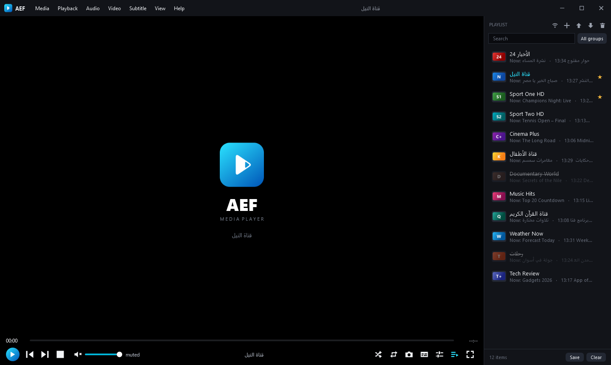

A fast, elegant media player,
built for Arabic speakers
Films, series, music and IPTV in one light app, with a complete right-to-left Arabic interface (and English), and Arabic subtitles that display correctly the first time.

Everything in one place
No extra codecs, no complicated settings.
Plays almost everything
MP4, MKV, AVI, live streams and music, with hardware decoding for smooth, cool playback.
Arabic subtitles that work
Old Arabic subtitle files that show gibberish elsewhere display correctly; find and download more online with one key.
Your library
Films and series with pictures, series by season and episode, and "Continue watching" where you stopped.
Play on your TV
Send a video to the smart TV at home and use the PC as the remote, or mirror the whole screen.
Seek-bar preview
Hover over the seek bar to see a picture of that moment before you jump.
Bookmarks and sleep timer
Save moments and jump back to them; let playback stop by itself, fading the sound out gently.
IPTV, done properly
Sign in with your provider's account once: channels, films and series come in by themselves.
IPTV accounts
Server, user name and password, and that's it. The password stays encrypted on your PC.
Programme guide
Now and next for every channel, the full day's schedule, and reminders before a programme starts.
Record live TV
Record a match or a show with Ctrl+R, or set it to record by itself when it starts.
Groups, favourites, search
Channel logos, groups, instant search in Arabic and English, favourites, and hiding dead channels.
Frequently asked
Does it come with channels?
No. It is a player: it plays the channel list or IPTV account you get from your provider.
Windows says "Windows protected your PC". What do I do?
Click "More info", then "Run anyway". This appears for new apps that are not yet code-signed.
How do updates arrive?
The player checks once a day and offers new versions; every update is verified before it is installed.
Does it collect data about me?
No. The privacy policy lists exactly what it connects to and why.